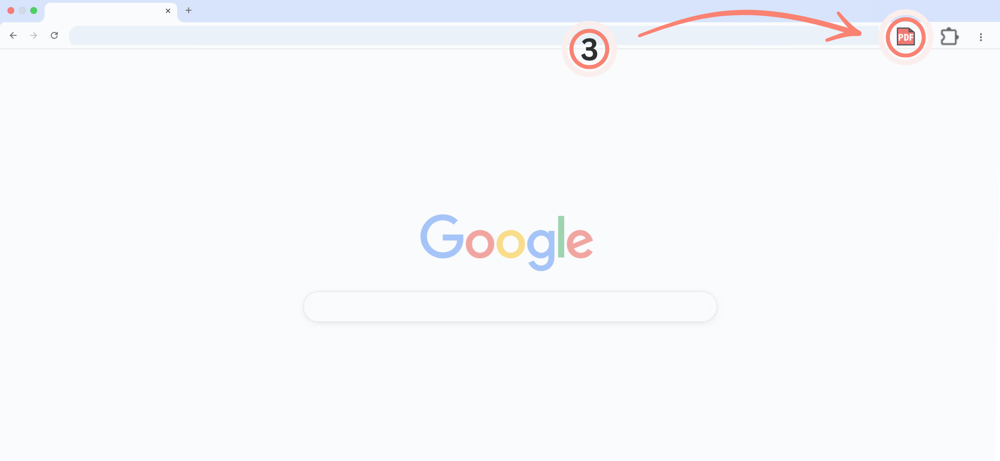

«Pagina web in PDF» è stata installata! 🎉 Ecco come iniziare.
Apri il menu Estensioni (1) nell’angolo in alto a destra di Chrome. Quindi fai clic sull’icona a forma di puntina (2) accanto a «Pagina web in PDF».

Tutto pronto! Fai clic sull’icona PDF (3) ogni volta che vuoi salvare una pagina web.
